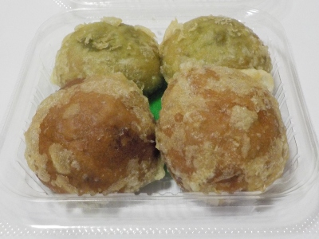
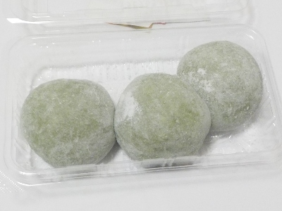
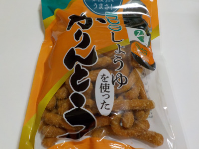
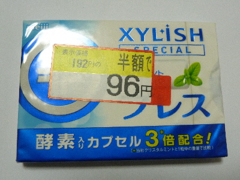

ラピタ本店で販売していた黒糖と抹茶のまんじゅう天
更新日 : 2026/09/22

揚げまんじゅうじゃなくて、天ぷらまんじゅうです。
衣が油を含んでいるので、天ぷら食べてる感じが強かったです。ドーナッツとかとは全然違う味でした。
黒糖は饅頭感がありましたが、抹茶は春菊の天ぷらと餡子を一緒にてべるみたいな感覚になりました。これはこれで美味しい。
4個税込み302円でした。
島根県出雲市今市町87
更新日 : 2026/09/22

揚げまんじゅうじゃなくて、天ぷらまんじゅうです。
衣が油を含んでいるので、天ぷら食べてる感じが強かったです。ドーナッツとかとは全然違う味でした。
黒糖は饅頭感がありましたが、抹茶は春菊の天ぷらと餡子を一緒にてべるみたいな感覚になりました。これはこれで美味しい。
4個税込み302円でした。
更新日 : 2025/11/30

ヨモギは爽やかな風味があっていいですね。たまに食べたくなります。
こんもりとしてしていて丸く、餡子が沢山入ってました。お菓子感覚で美味しく食べました。
大福みたいに柔らかいお餅があったりしますが、これはしっかりとしたお餅でした。時間が経ったら固くなるかもしれません。でもお餅が好きで食べているので、歯ごたえがあったほうがいいです。つき立てもいいですが、私は少し硬めが好きだな。
お餅3個税込み447円でした。質量的には大福やおまんじゅうよりお得な感じがしますね。
更新日 : 2022/05/25

かりんとうは色々な味の商品がありますが、しょう油味のものを食べた記憶がなかったです。
食べていそうで食べてない商品かも。
しょう油と砂糖でみたらし風の味なので、甘辛くて普通に美味しかったです。
実は食べているけど、普通に美味しいので特に記憶に残っていないだけかもしれません。
更新日 : 2017/01/30
一時閉店となるので、いいものが安売りしていないかぶらぶら歩きました。
鞄とか服が安くなっていたので見たんですが、好みのものはなかったです。残念でした。

普段買わない、ちょっと高いガムが半額なので買って帰りました。
お酒も安いものがあったので、買いました。
もうちょっとしらた、もっと安くなるかな？また行ってみます。
更新日 : 2009/02/01
節分前の日曜って事で、ラピタ本店3Fで豆まきがありました。
北山からやって来たという、ちょっと人の良さそうな怖い赤鬼と青鬼さんが登場し、司会の人の進行で豆まきがスタートしました。
鬼さんを殺しちゃうと来年来てもらえなくなるから、前に出ないでね。っていう説明が面白かったです。
豆まきで使用する豆1袋（結構量がありました）は無料で貰えるし、退治した鬼さんからはお菓子のプレゼントを貰えるので、子供にはうれしいイベントですね。
自宅で豆一袋を撒き散らかす様な事はなかなか出来ないので、貴重な経験が出来ます。来年もあったら、小さい子がいるところの方は是非どうぞ。